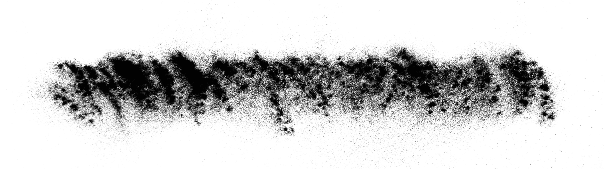
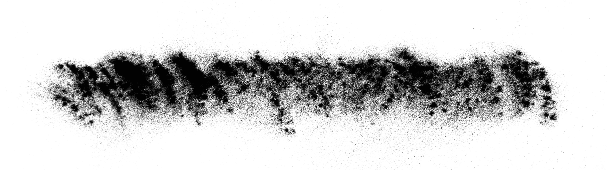
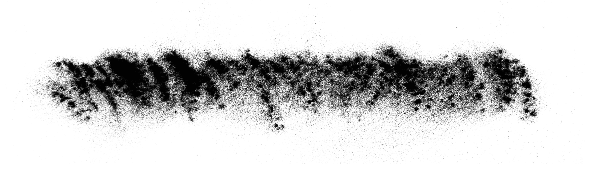
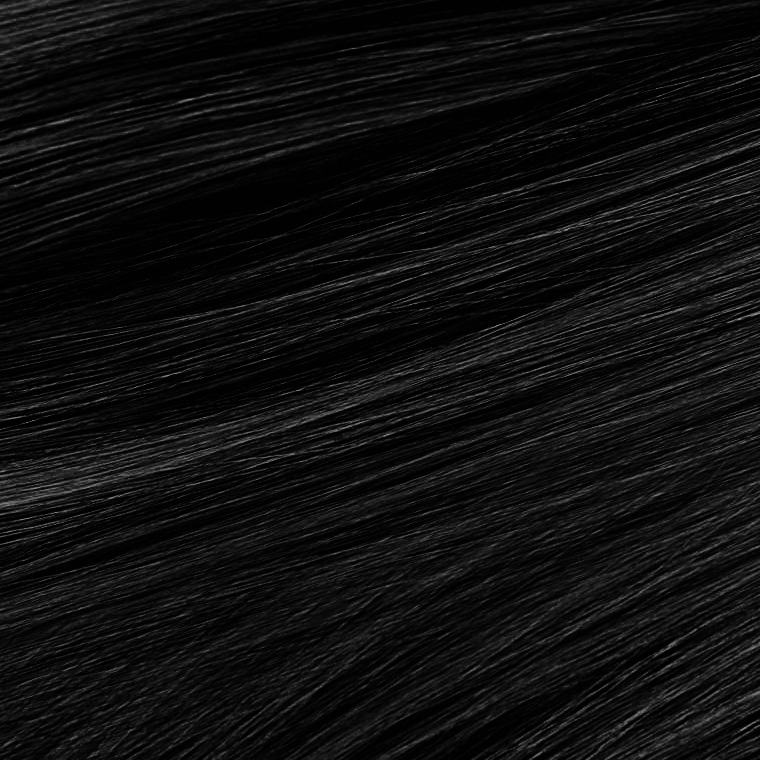
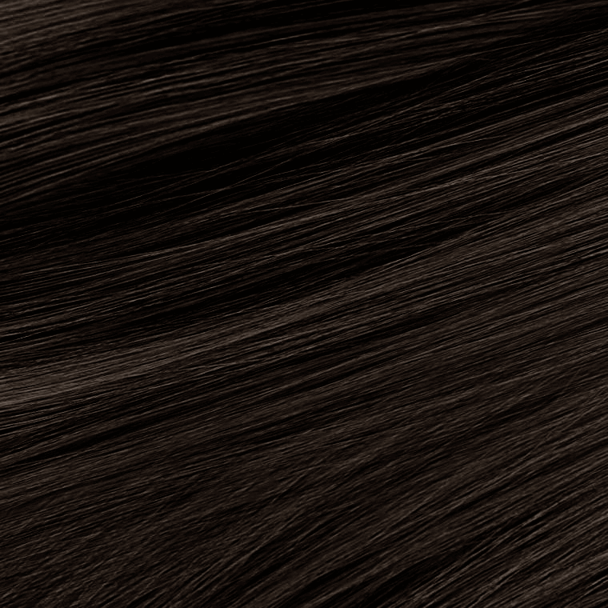
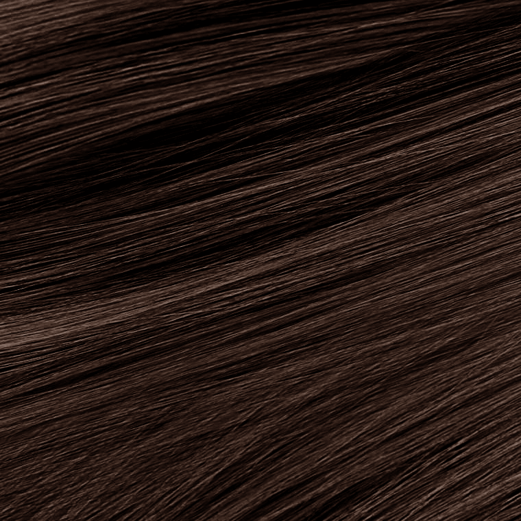
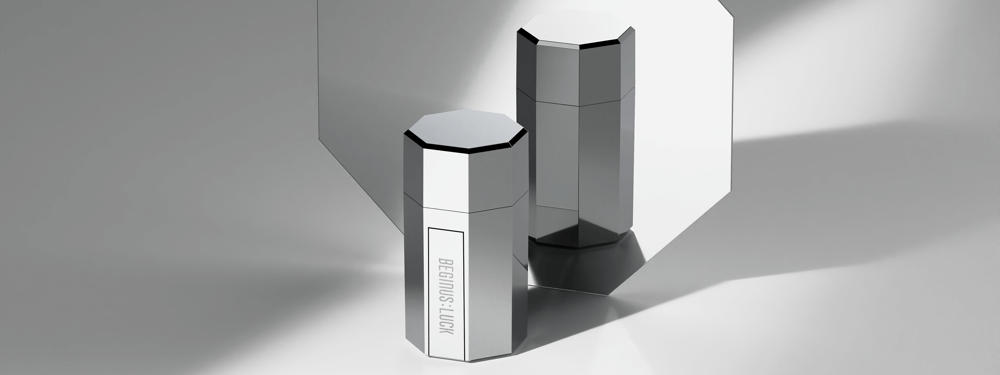
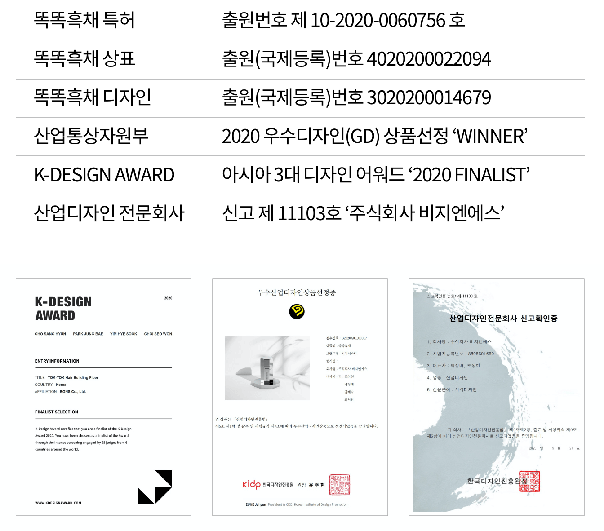

선입견, 거부감, 불편함,
흑채를 향해 굳게 닫힌 마음을
함께 열어 보시겠어요?
똑똑하고 슆다
똑똑하고 쉽다
똑똑하고 싶다
우리는 알고 있습니다.
흑채가 얼마나 효과가 좋고 장점이 많은지.
하지만 얼마나 다루기 어렵고 까다로운지.
BGNS 멤버들은 탈모로 인해 직접 흑채를 사용하며 생활했기에 경험해 보지 않고는 알 수 없는 장단점과 디테일을 누구보다 잘 알고있습니다. 그리고 그 경험들 속에서 더 나은 흑채의 필요성을 절실히 느꼈습니다.
그래서 우리는 하기쉽고, 하고싶은 흑채를 만들고자 했습니다.

준비하시고~
쏘세요
흑채를 잘 사용하기 위해서는 요령과 기술이 필요했습니다.
그래서 흑채는 어렵고 불편할 수 밖에 없었습니다.
하지만 이제는 내가 원하는 타이밍, 정확한 위치,
연출하고 싶은 느낌과 밀도만큼
방아쇠를 손끝으로 똑똑 튕겨주세요.
똑똑흑채는
누구나 똑똑하고 슆게 사용이 가능합니다.
Feel 좋은
필터가
필요할 터
Mesh Filter
자연스럽고 부드러운 분사와 내구성을 위한
스테인리스 메쉬 소재 2차 필터
Hole Filter
흑채의 뭉침을 풀어주고 역류를 방지하는
ABS 플라스틱 소재 1차 필터
뭉치지 않아서 망치지 않아요
기존의 흑채들은 정성을 들여 조심스럽게 뿌려도
흑채 분말이 뭉쳐서 망치는 경우가 많았어요.
하지만 똑똑흑채는 방아쇠를 튕겨 발생하는 진동으로 인해
카트리지 내부의 흑채 분말이 곱게 부스러지며 필터로 이동하고
간격이 넓은 ‘Hole Filter’와 촘촘한 ‘Mesh Filter’를 차례로 거치며
더욱 더 고르게 분사됩니다.
덕분에 뭉침 없이 부드러운 그라데이션 질감으로
가볍게 도포 될 수 있다는 사실!

뭘 좋아할지 몰라서
다 준비했어요
한국인의 모발에 가장 잘 맞는 다양한 컬러를 준비했습니다.
1.0
내추럴블랙
3.0
다크브라운
5.0
라이트브라운
카트리지
메킷이지
똑똑흑채는 일체형이 아닌 카트리지 교체형 이므로
바디에 결합된 카트리지만 교체하면 언제든 새 제품처럼 사용할 수 있습니다.
슆고 편한 사용을 위해 카트리지의 장착과 교체가 편리하도록 설계되었으며
분사 방식의 특징과 카트리지 필터의 구조 덕분에
사용상의 낭비를 막을 수 있어 경제적이기도 하죠.
효율성과 경제성 모두
놓치지 않을 거예요.
굳이 왜
꿋꿋이?
BGNS 가 똑똑흑채를 개발하는 과정에서 많은 사람들이 물었어요.
“기성제품을 판매하면 되는데 굳이 왜?”
효율적이고 혁신적인 구조를 새롭게 설계하고,
고급스럽고 우아한 디자인을 개발하고,
더 좋은 소재와 원료를 찾아 연구하고,
왜 그렇게 힘들게 가느냐는 질문들을 뒤로 하고
굳이 어렵고 먼 길을 꿋꿋하게 걸어왔습니다.
똑똑한 답을 찾아서.
8각에서
답을찾다
Cr3+
Chromium
Plating
쉽게 말해,
내구성이 좋고
인체에 무해하며
주얼리처럼 빛나고
거울의 역할도 할만큼
표면을 잘 가공했다는 뜻
입니다.
쉿,
똑똑흑채의 거울같은 표면에
방금 도포한 부분을 비춰볼 수 있어
흑채가 원하는 부위에 잘 뿌려졌는지
바로 확인할 수 있는 건 비밀 (찡긋)
유일무이
대체불가
똑똑흑채

남친 여친 남편 아내 아빠 엄마 삼촌 이모
도 똑똑하고 슆다
볼륨없으면
볼품없으니
똑똑흑채는 정전기 효과로 모발을 촘촘히 감싸주기 때문에
볼륨과 스타일을 잘 살려주고 바람에도 쉽게 날리지 않아요
또한 두피에도 볼륨감있게 소복소복 도포되기 때문에
볼륨감과 탈모커버를 아우르는 스타일링이 가능하죠.
TIP. 스타일링 후 단단픽서로 마무리하면 든든!
단단해서
든든
단 단 픽 서
세젤쎈
세팅력
세심한
세정력
안개같은 존재감
픽서는 흑채 스타일링의 화룡점정.
하지만 픽서액이 펌프에서 무겁게 뿜어지면
정성들여 세팅한 헤어스타일을 망치게 되죠.
단단픽서의 펌프는 안개처럼 미세한 입자로 부드럽고 고르게 분사되어
헤어스타일의 자연스러움을 유지하면서도 단단하게 고정해 줍니다.
- 늘 깔끔한 사용을 위한 TIP -
사용 전 : 다른곳에 가볍게 1~2회 미리 분사 후 사용
사용 후 : 노즐에 남은 픽서액을 닦아낸 후 보관
호 NO
불호
? !
나에게는 향기로운 향이
누군가 에게는 피하고 싶은 향일수도 있습니다.
향기는 각자의 취향에 따른 호불호가 있어
특히 더 민감하고 조심스럽습니다.
그래서 단단픽서는 개성이 강하고 무거운 향 보다는
부드럽고 가벼운 머스크향을 베이스로 조향하여
누구나 편안하게 사용할 수 있도록 하였습니다.
혼자 두면 예쁘고,
함께 두면 아름다운.
꼭꼭 감추고 숨겨질 수 밖에 없었던 흑채,
그런데 누가 이것들을 흑채와 픽서라고 생각할 수 있을까요?
똑똑흑채와 단단픽서는 장식을 위한 오브제로서도 충분합니다.
똑똑하게 장착하기
똑똑하게 사용하기
똑똑하게 교체하기
똑똑하게 구매하기
BEGINNER SET
비기너스럭 121 세트(GIFT PACKAGE)
99,000원 121,000원
LUCKY SET
비기너스럭 똑똑흑채 030 세트
105,000원 150,000원
비기너스럭 똑똑흑채 060 세트
198,000원 300,000원
BASIC
똑똑흑채 바디
18,000원 25,000원
똑똑흑채 카트리지
38,000원 50,000원
단단픽서
18,000원 25,000원
탈모로 인해 가발을 쓰고있는 조상현 대표는 맞춤가발샵’WE CAN :DO IT’을 운영하며
SBS 생활의 달인, MBC 마이리틀텔레비젼, KBS 나는 남자다, 채널A 서민갑부 등에 출연함으로서
보수적이었던 가발시장에 젊고 창의적이며 긍정적인 에너지를 불어넣고 있습니다.
조상현 대표는 가발을 쓰기 전 22살 부터 탈모로 인해 흑채를 사용하기 시작했습니다.
손재주가 좋은 편임에도 흑채의 사용이 너무 어려워 해결책을 찾아 다방면으로 연구했고,
빨래집게를 흑채통에 붙이고 그것을 튕기며 분사하는 쉽고 편한 방법을 고안해 냈습니다.
그 덕분에 흑채사용을 훨씬 더 쉽고 편하게 할 수 있었습니다.
시간이 흘러 가발을 쓰게 되면서 흑채 사용을 더이상 하지 않게 되었지만,
15년 뒤, 그 아이디어는 똑똑흑채 개발의 뿌리가 되었습니다.
자신의 경험과 노하우, 아이디어를 바탕으로 직접 구조설계와 디자인을 하며 제작을 이끌었고
그 덕분에 어디에도 없는 독창적이고 효율적인 똑똑흑채를 만들어 낼 수 있었습니다.